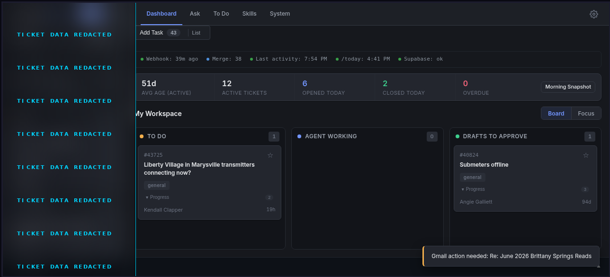
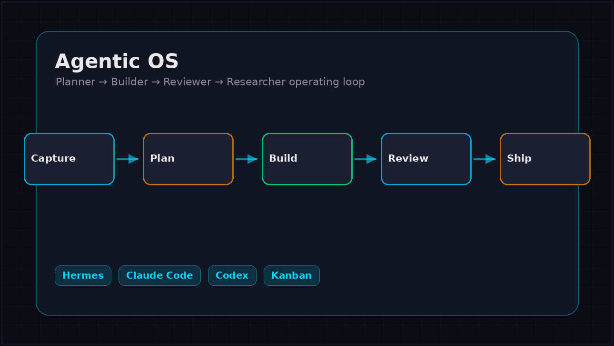
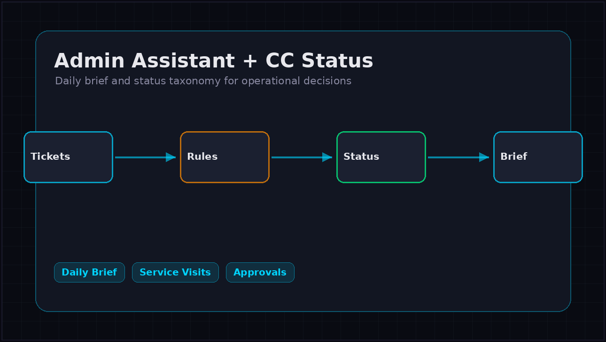
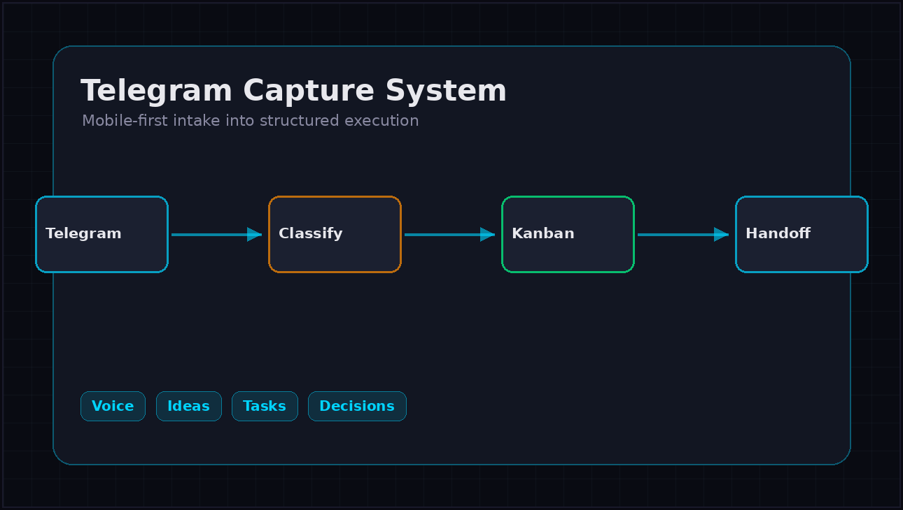
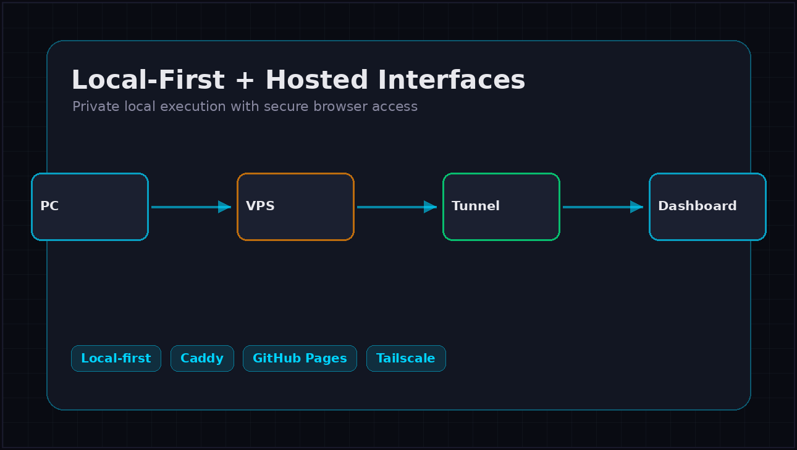
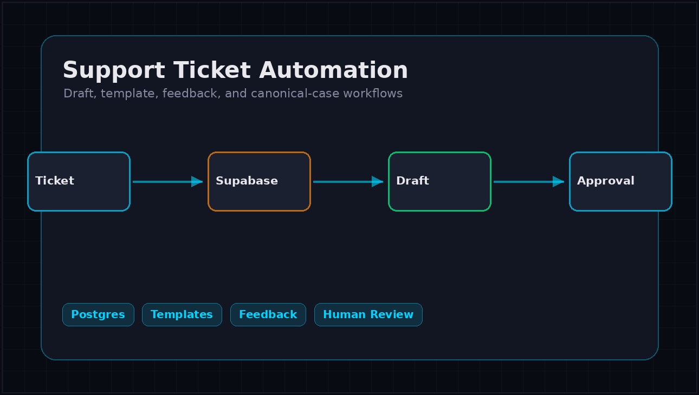

AI Automation Builder / Technical Systems Portfolio
Command centers, intake flows, status dashboards, and repeatable systems that turn loose requests into trackable work.
Agentic workflows using Hermes, Claude Code, Codex, Telegram, local machines, databases, and browser-accessible tools.
Supabase-backed drafts, templates, feedback loops, canonical cases, and structured operational data for support workflows.
Local-first workflows, approval gates, privacy-aware handoffs, and lightweight hosted interfaces across multiple providers.

A working operations hub for priorities, ticket queues, tasks, approvals, calls, and daily status. The public image is redacted, but it shows the actual dashboard shape instead of a mock landing page.

A multi-agent operating loop with separate planner, builder, reviewer, and researcher profiles. The system separates strategy, implementation, verification, and discovery so work can move without becoming noisy.

A practical assistant layer for support and admin operations: daily brief structure, CC status taxonomy, blockers, approvals, ticket constraints, and service-visit status rules.

A mobile-first intake path for ideas, tasks, builds, research, decisions, reminders, waiting items, support notes, and operations requests.

A pattern for keeping sensitive execution local while still making tools reachable through safe hosted surfaces, private tunnels, VPS services, and static public pages.

Support workflows connected to reusable templates, canonical examples, Supabase data, feedback, and approval-first drafting. The system supports better responses without removing human judgment.
Command centers, status taxonomies, case-study flows, and architecture choices that connect tools into one operating loop.
Dashboards, static portfolio pages, local web UIs, secured access paths, and screenshots from running products.
Supabase/Postgres patterns, templates, feedback loops, Google Calendar/service-visit rules, and support workflow context.
Planner, builder, reviewer, and researcher roles with local execution, human approval, and review before completion.
The work began by understanding support operations, repeated admin tasks, service-visit coordination, and the places where information was scattered across tools.
The portfolio now includes command centers, Telegram intake, Supabase-backed draft workflows, hosted dashboards, daily brief scaffolds, and multi-agent execution patterns.
The result is a proof-of-work library: practical AI automation, local-first privacy, hosted access where useful, and human approval before sensitive actions.
A working record of AI automation projects, operational systems, and local-first workflows built from early experiments into usable tools.